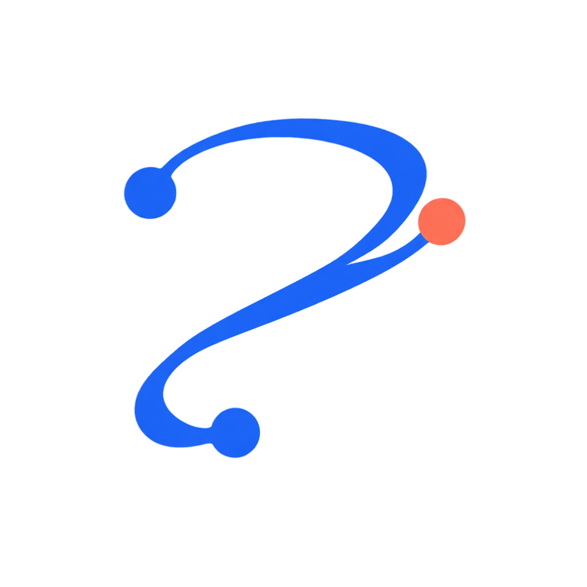
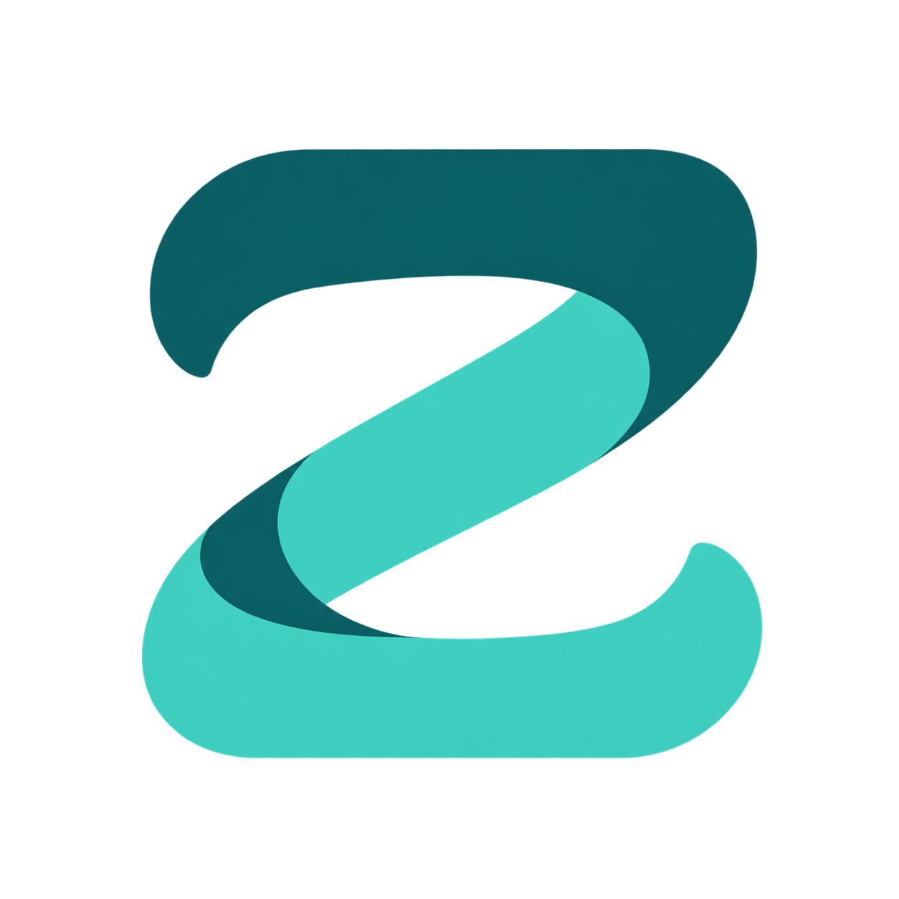
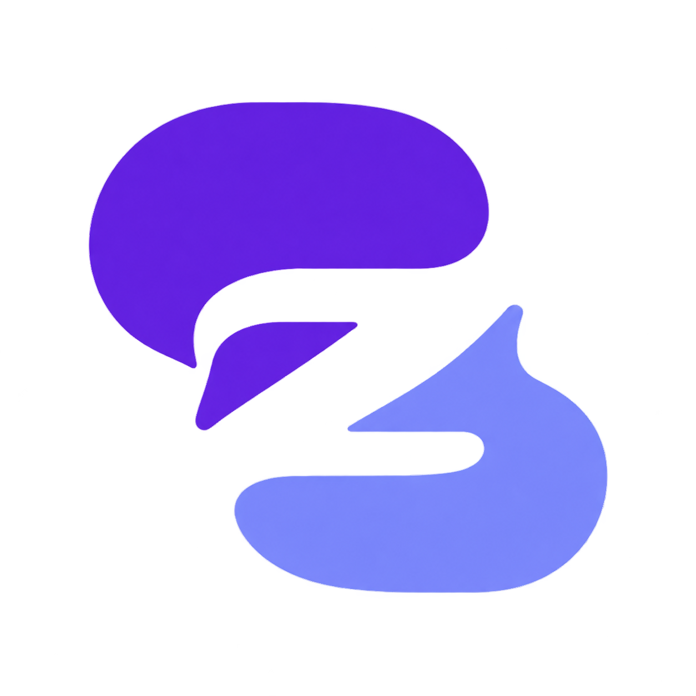
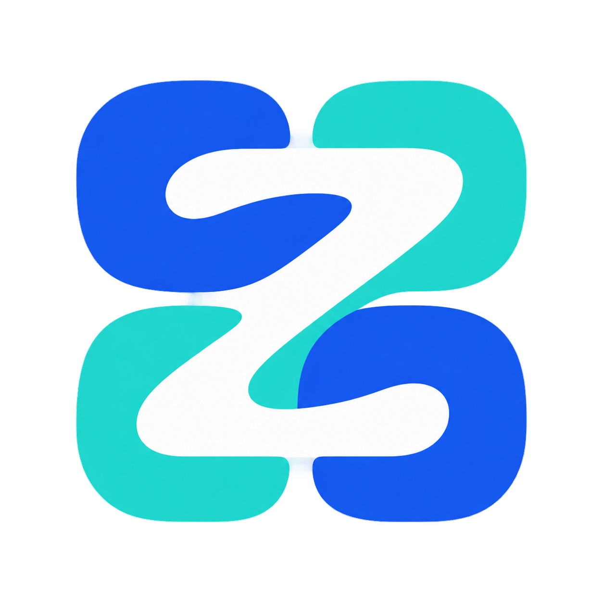
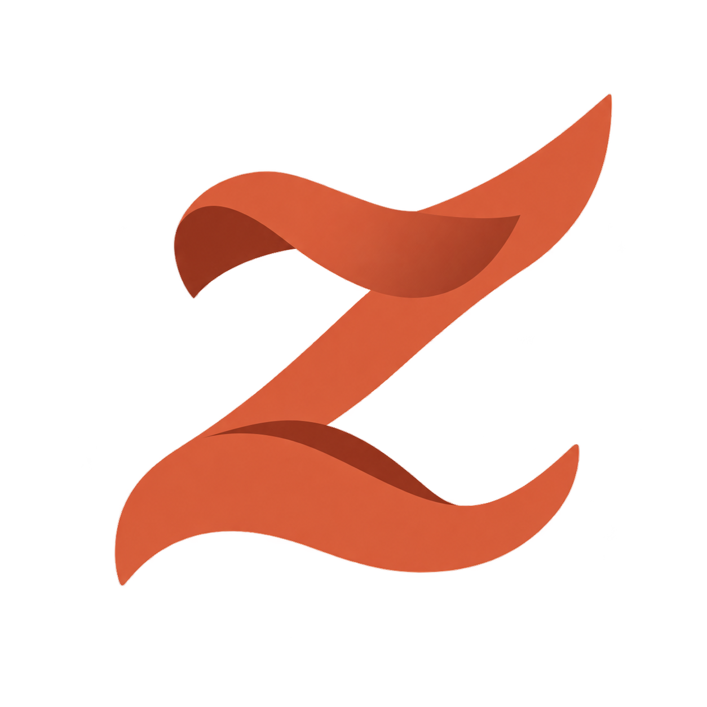

01流转

将 z 化成柔和路径，节点寓意内容抵达不同平台。
第二轮 / 六个设计方向。用笔画、轮廓与留白表达内容流转、版本关系和平台连接。

将 z 化成柔和路径，节点寓意内容抵达不同平台。
纸页与留白共同构成 z，呼应母稿和多个平台版本。

两条柔软笔画交织，让 z 同时成为连接的符号。

用对话的轮廓组合 z，连接内容表达与读者反馈。

平台模块通过斜向笔画连接，让矩阵与 z 融合。

将 z 变成一张舒展的纸笺，表达创作与传播。